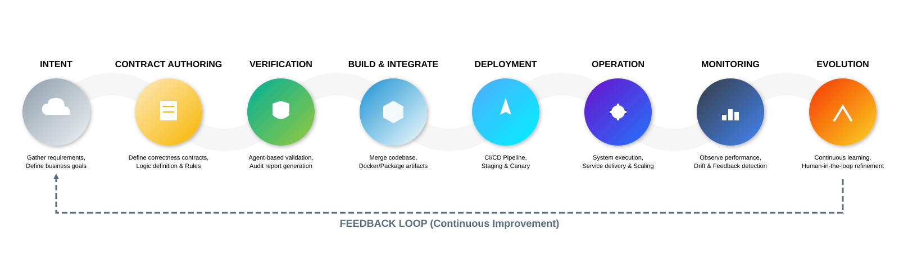

The Chakraview AI Dev Model
An open framework for contract-first, AI-agent-driven software development. Extracted from the Enterprise Modernization project into a standalone, reusable model. Six defined personas. A continuous SDLC cycle with a formal Intake/Triage entry point. The methodology behind every reference architecture in this portfolio.


Six Defined Personas
Human Domain Expert · Documentation Agent · Script Authoring Agent · Script Executor · Implementation Agent · Architectural Compliance Agent. Each persona has explicit accountability, defined tooling, and human review gates. No persona acts without a contract that authorises it. Deviations from ADRs are classified as intentional (new ADR required) or unintentional (agent re-runs) — never silently accepted.
Continuous SDLC Cycle
Business intent enters through Intake/Triage — a two-round interactive dialogue where the Compliance Agent and Implementation Agent challenge every assumption before a contract is written. A triage routing table classifies intent and routes it to the right phase entry point. Phase 7 and Phase 7b detect change signals from the running system and re-enter them as the next Intake input. The loop is never open.
Contracts Are the Boundary
Humans author contracts. Agents implement from them. The separation is structural
and enforced in CI by validate-contracts.sh — no agent output is
accepted without a corresponding contract that authorised it. SLA targets flow
through to SLO definitions and Prometheus burn-rate alerts without manual
translation. Vague contracts produce vague implementations.